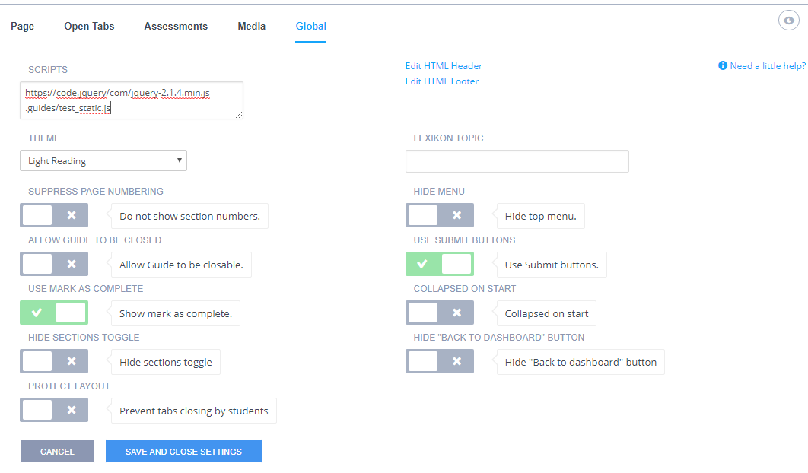

Custom Buttons in Guides¶
Custom buttons allow you to insert a button into your guide content that when pressed can carry out any custom action.
Use buttons to perform a variety of actions:
To jump to a page in the content¶
This will jump to a specific page in the guide
{Button Text | go-to-section-titled}(section title)
example:
{Go to Section: LTI | go-to-section-titled}(LTI)
To launch a process¶
This will launch a process and execute a terminal command. In this example a Python program is run and output is displayed in the guide.
{Button Text}(command parameter1 parameter2 parameterN)
example:
{Try it}(python3 input.py)
Launching a process in a terminal window¶
There are cases where you will want to launch a command in a dedicated terminal window, for example when student code requires input. Codio cannot handle standard input through the guides window. The “Try it” button command below will compile and run a Java program in the terminal window, allowing for user input.
{Button Text | terminal}(command)
example:
{Try it | terminal}(javac Main.java&&java Main)
To launch a process in the background¶
This will launch a process in the background.
{ Button | background}(my_command_in_background)
Launching a debugger configuration¶
You can launch a debugger configuration as shown below. It is important to specify the configuration name exactly. More information about the debugger here.
{Button text | debugger}(debugger configuration name)
To restore current files in guides¶
Students can restore current files to the default setting from the setting menu but you can also offer them a button within your guides content as well.
{Button text | reset}(optional commands to run)
Writing a custom event handler¶
This offers you the most flexibility and allows you to write your own custom button press handler. A common use case is executing tests on user code.
To do this, you should use the following format for your custom button.
{Button Text|custom}(myId)
If you wish to use a custom event handler to allow students to restore current files and handle other functions, you can do so but you will need to include this code in your custom script:
window.addEventListener('codio-button-custom', function (ev) {
if(codio) {
codio.resetCurrentFiles()
}
});
Loading Scripts¶
You should point your content page to a script file to load javascript scripts.
In Edit mode in the Guide click Settings.
Select the Global tab in the Guide.
Enter the location of your scripts in the Scripts area.

Event Listener¶
The event listener executes a custom task. It will display a custom message area into which you can write your own results data. The message data can be a custom message and can be plain text or HTML.
For the event listener to run you need to include the following in the Scripts area of your Global settings(see Loading Script above).
https://codio.com/codio-client.js (where your account is running on codio.com)
https://codio.co.uk/codio-client.js (where your account is running on codio.co.uk)
The icon that appears in the top left of the message area can be controlled from your event listener, as shown in the example below.
window.addEventListener('codio-button-custom', function (ev) {
console.log('id:', ev.id, 'cmd:', ev.cmd, ev);
if (codio) {
codio.setButtonValue(ev.id, codio.BUTTON_STATE.PROGRESS, 'Checking');
codio.setButtonValue(ev.id, codio.BUTTON_STATE.FAILURE, 'Bad Job :(');
codio.setButtonValue(ev.id, codio.BUTTON_STATE.INVALID, 'Internal error');
window.setTimeout(function () {
codio.setButtonValue(ev.id, codio.BUTTON_STATE.SUCCESS, 'Extremely well done!');
},1000);
}
});
console.log('test.js script loaded');
ev.id is the contents internal id for the button.
ev.cmd is the myId text you specified in the button with {Button Text|custom}(myId). This is typically used to indicate the id of the test you wish to run or just the specific button that is being pressed.
The available button commands are
codio.setButtonValue(ev.id, codio.BUTTON_STATE.PROGRESS, 'Checking..');
codio.setButtonValue(ev.id, codio.BUTTON_STATE.SUCCESS, 'Good job!');
codio.setButtonValue(ev.id, codio.BUTTON_STATE.FAILURE, 'Bad Job :(');
codio.setButtonValue(ev.id, codio.BUTTON_STATE.INVALID, 'Internal error');
The 3rd parameter can contain text to display in the button’s attached message area. It can be plain text or HTML.